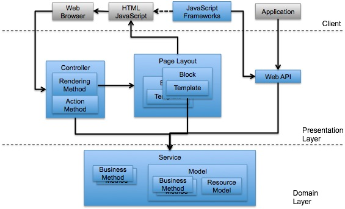

Magento 2 Extension Model Proposal: Alpha 1
To support our overall goal of better modularity in Magento 2, we’re introducing support for a few new ideas in this Alpha-1 release of Extension Model Improvements. A major theme of these ideas is the separation of responsibilities, especially between business logic on one side and presentation logic and user experience on the other.

The diagram above attempts to describe the ideas behind these changes visually. Business logic is confined to the service layer and encapsulated in service classes.
You can find the source code for the proposed changes in the recent github push here. There is also a VirtualBox image that contains the installation of a recent Magento-2 code base here. Instructions for using the virtualbox image are here.
Services
Services provide a single, common entry point for all interaction among different UIs, including blocks, controllers and web services. A service can even serve as an interface for business logic for other modules.
Services have well defined interfaces described in a service IDL. Service IDLs document the public methods available to templates, blocks, controllers and web services. For each method, the input and output data types are defined in XSDs.
Webhooks and Callbacks
To improve remote integrations with Magento, we’re enabling the automatic exposure of these services as web services to external clients. This Alpha-1 release also introduces support for real-time integrations with remote systems using webhooks and callbacks.
Webhooks provide Event Observer-like behavior over HTTP. They allow you to be notified when certain events occur in Magento and let you get real-time data from the system. Callbacks also support communication from your Magento installation out to a remote system, but callbacks trigger synchronously and use the response from the remote integration in the rest of the user request processing. As an example, in this release we’re supporting the ability to define remote shipping carriers where the shipping rates are retrieved over an HTTP call.
Better Templating
On the presentation tier, we’re introducing support for Twig templating. Theme development has always been a big part of Magento store customization, but templates written in PHP meant that business logic occasionally was written into the .phtml files. This meant that business logic could be lost, and had to be duplicated from theme to theme. With a templating language like Twig, which uses a restricted syntax, it is easier to ensure that your template files will only be concerned with the logic needed to render your data.
Because templates need data to render and services are designed to provide a well-managed, consistent view of the data a module can provide, we’ve introduced a syntax for binding templates to a service call directly from the layout file.
Extension Configuration Improvement
There’s another small improvement that we’ve made to system configuration that we hope will make your life a little easier. For most of the configuration fields you define, you can describe everything you need in XML–except for the values of a select box. We’ve introduced a syntax with this release that will allow you to describe static select options inline, and dynamic options can be extracted from the result of a service call.
These concepts have been introduced in isolated parts of the Magento application so far in the hopes that you will comment on their value and help direct and refine how they work. This is only the first set of ideas we’re sharing–there are more to come, all aimed at improving compatibility among Magento extensions, and the modularity and upgradability of Magento.
New Approach for Creating Extensions and Customizations
Here’s an outline of how to create an extension that includes some business logic and associated presentation logic:
-
Create a service that encapsulates the extension’s business logic. This involves defining the service interface using the service IDL, listing the methods whose output will be needed in the presentation tier, and defining the method input and output using XSD schemas.
-
Create a template that renders your extension’s visual appearance.
-
Associate the template’s data to one or more service calls via configuration in layout.xml.
-
Optionally, configure static and dynamic options lists for your extension.
1. Create the Service That Serves Data to Your Extension
You can start by looking at an existing service, such as the Product service. Many extensions can just use an existing service. Extensions that modify only the presentation logic or the look and feel can use existing services to obtain the data to be rendered.
To create a service, you begin by defining the service using an IDL. The IDL specifies the metadata for the service such as its name, version, list of methods and input/output of methods. Learn more about service IDLs here: http://magento.github.io/magento2-developer-docs/service-idl/
Once you have defined your service IDL, you implement the service. A service is implemented using a PHP class. The public methods of this class become available for the presentation layer to access data. You can learn more about this by reviewing the implementation of the Product service described here: http://magento.github.io/magento2-developer-docs/service-impl/
You can also expose your service over the web to REST and SOAP interfaces. There is no implementation in the Alpha-1 release for this feature yet, but you can get an idea as to how this will work here: Web Services
2. Create the Template for Your Extension
To build the presentation layer functionality for your extension, you create Twig templates. Find out how to use the new Twig templates for your extensions here: Twig Templates
3. Associate Template’s Data to Service Methods
Once you have created a service and a template, you will need to associate the template’s data to one or more service methods. You do this using service calls. First, you need to declare service calls in service-calls.xml.
<service-calls>
<service-call name="selectedProductDetails" service="Mage_Catalog_Service_Product" method="item">
<arg name="productId">{{request.params.id}}</arg>
</service-call>
<service-call name="selectedProductOptions" service="Mage_Catalog_Service_Product" method="getOptions">
<arg name="productId">{{request.params.id}}</arg>
</service-call>
<service-call name="relatedProducts" service="Mage_Catalog_Service_Product" method="getRelatedProducts">
<arg name="productId">{{request.params.id}}</arg>
</service-call>
</service-calls>
To see a fuller example, review the Product service calls declaration here: Product Service Calls Declaration
Once you have declared a service call in service-calls.xml, you bind it with your extension’s template in layout.xml.
<block type="Mage_Catalog_Block_Product_Twig" module="Mage_Catalog" name="product.info"
template="Mage_Catalog::product/view.twig">
<data service-call="selectedProductDetails" alias="product" />
...
...
</block>
For reference, you can review the product service call invocation here: Product Service Call Invocation
4: https://github.com/magento/magento2/blob/master/app/code/Mage/Catalog/view/frontend/layout.xml
At this point, you should have a working extension that has both presentation and business logic implemented and working together.
4. Configure Your Extension’s Option Lists
Your extension can now be configured. To set up configuration, you create static and dynamic option lists by editing a system.xml file. Learn more about setting up option lists here: Extension Configuration